高三那年，正值疫情网课，天学网那听力可是没少做，偶然发现这玩意实际上是本地判题，答案去数据目录翻翻便有，从此便开启了快乐听力（
上了大学之后，又听闻 iSmart，其 UI 风格与天学网听力那简直是如出一辙，研究发现这位果然也是本地判题，这波嘛，就是砧板鱼肉，且看我把它轻松收拾
前期准备
众所周知，iSmart 有个 web 端，登录进去之后，也能看到课程安排和各种任务点，但是并不能进入学习，会弹出一个「暂不支持」的提示：
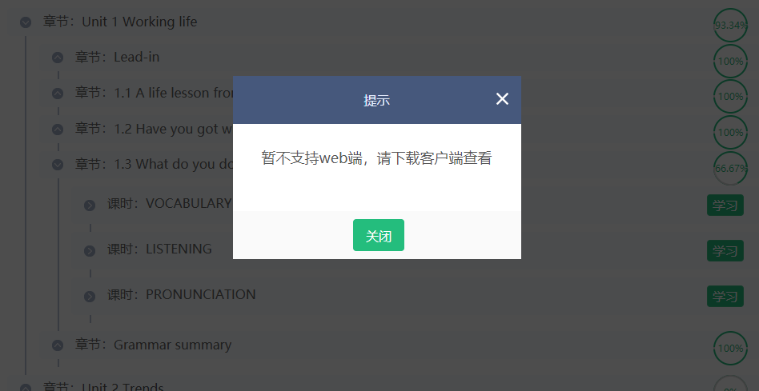
但是转念一想，既然客户端和 web 端的 UI 完全一致，那么代码层面上多少也会有些共通之处，遂抓包，发现把客户端进入学习的 URL 拿到浏览器打开，是能够正常进入的，只不过没法提交答案：
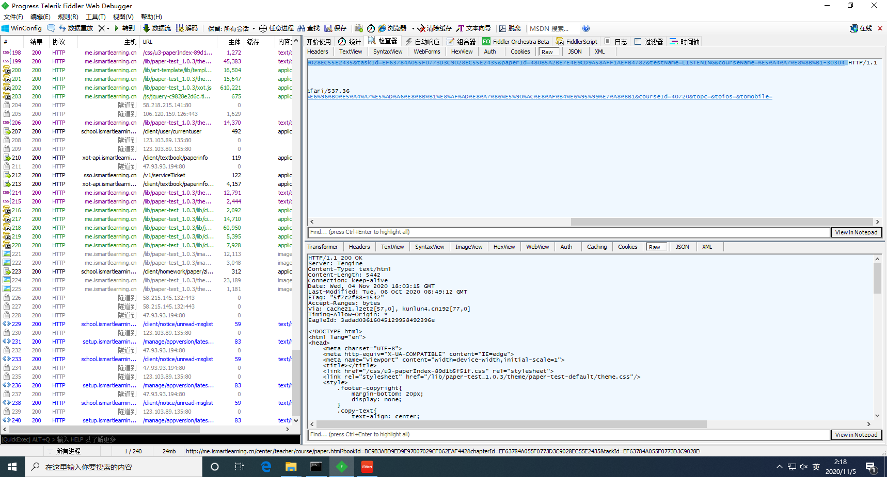
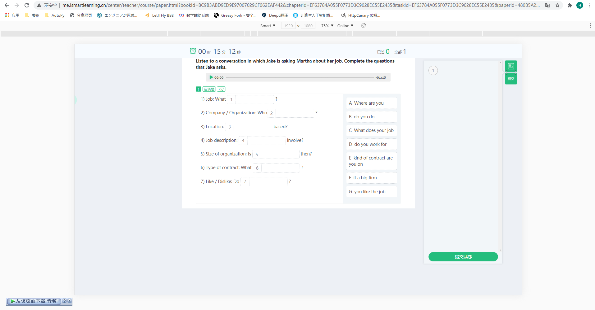
回到 web 端目录页，查看「学习」按钮的 click 事件，在第 248 行有一个这样的判断：
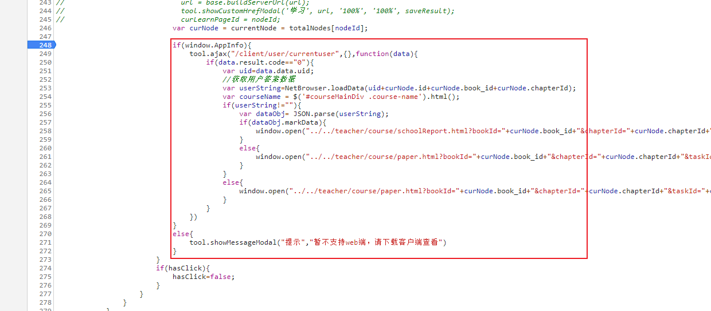
不难看出这里网页是通过 window.AppInfo 属性来判断是否为客户端的，经过查找，确定当前上下文中只有 3 处 window.AppInfo，且全部用于客户端的判定，这里我们直接将 window.AppInfo 赋值为 true，然后继续往下看代码：
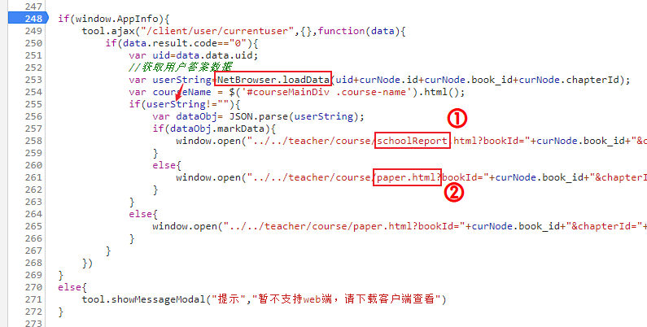
向前寻找并没有 NetBrowser 这个变量，在控制台中输入 NetBrowser 也返回 undefined，推测这可能是客户端在套壳浏览器中注册的某个特殊变量，且在正常情况下 userString 应不为空值。
再观察内层判断语句，通过 URL 中的词义可猜测：1️⃣号链接是在有分数的情况下展示得分情况的，而试题和答案则通过请求2️⃣号链接获得，然后在之前的抓包结果中搜索2️⃣号链接中的关键字，找到对应的请求:
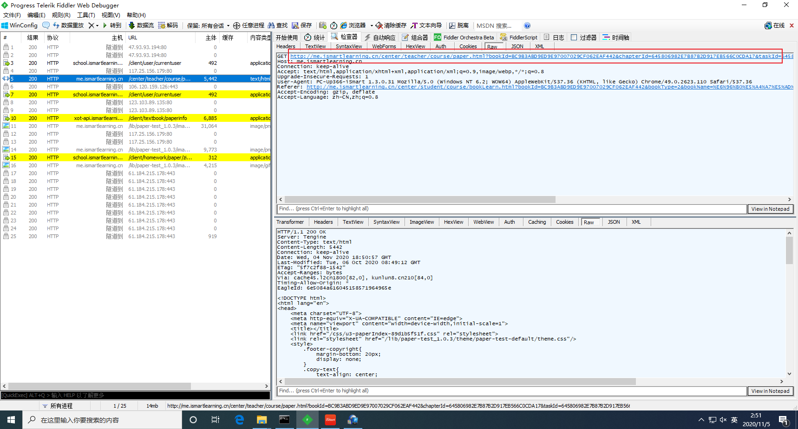
分析其 URL，分离出各个参数：
| 参数 |
值 |
bookId |
BC9B3ABD9ED9E97007029CF062EAF442 |
chapterId |
645806982E7B87B2D917EB566C0CDA17 |
taskId |
645806982E7B87B2D917EB566C0CDA17 |
paperId |
99F9F9570C883DA308C38E40C91C7D82 |
testName |
VOCABULARY |
courseName |
%E5%A4%A7%E8%8B%B1-30304 |
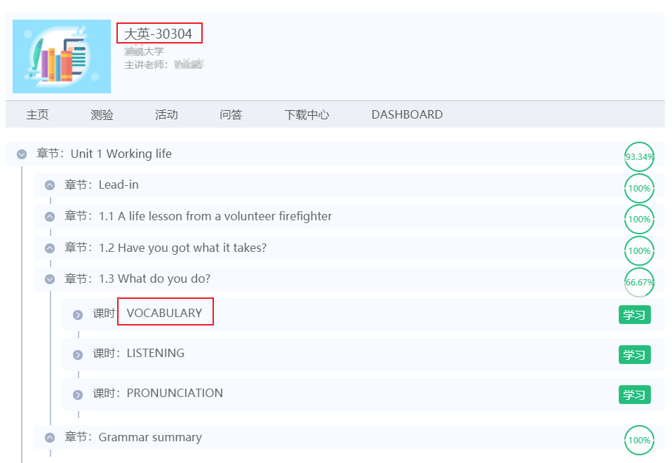
分析参数，testName 即任务点名称，courseName 即课程名，这两个 Name 都比较好获得。还剩下乱码一样的四个 id，在响应数据中搜索，发现在一个 chapters 请求中包含了全部四个 id:

这是一个 POST 请求，需要提交 3 个参数：bookId，bookType 和 courseId，返回课程中各单元各任务点的 id。所以接下来的任务就是继续递归寻找这三个参数的来源：
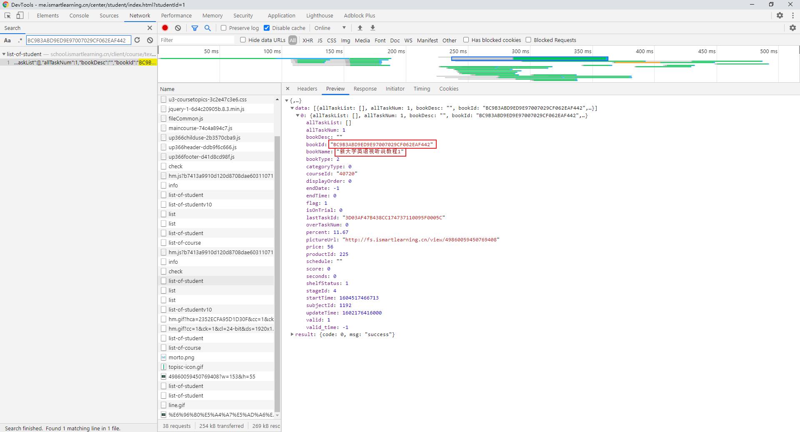
我们关注这个向 /client/course/textbook/list-of-student 发起的请求 ，这玩意返回的是某种课程列表之类的东西，而它只需要一个参数：courseId
继续向上搜索 courseId，发现在另一个 /client/course/list-of-student 请求中返回了这个 courseId，而且它不需要任何特殊参数！
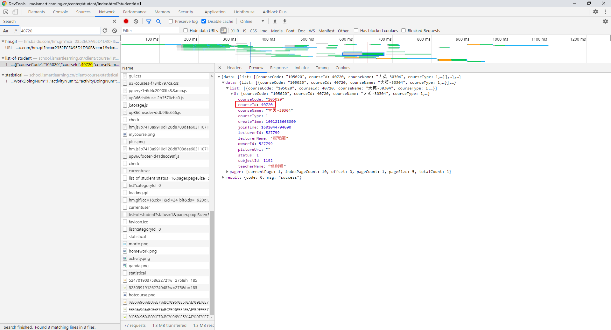
逻辑闭合，这意味着完全使用 Python 爬取答案数据成为可能！四个 id 都找齐之后，拼接好 URL，然后就可以直接访问它进入练习：
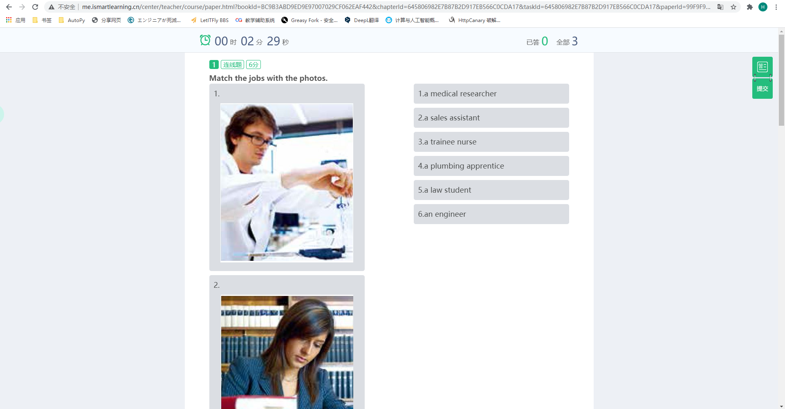
在这个页面显示出来的同时，一个 paperinfo 请求也悄悄地把答案加载到了后台，观察这家伙的请求参数，只需要一个 paperId，所以实际上我们是可以在加载试题之前把答案请求好的
写一个方便调试的小脚本
这好不容易都在浏览器打开练习了，不给它来点 JavaScript 注入怎么行？考虑从按下按钮时的这两个语句入手，先将 window.AppInfo 直接赋值为 true，然后在 NetBrowser.loadData 中实现页面跳转：
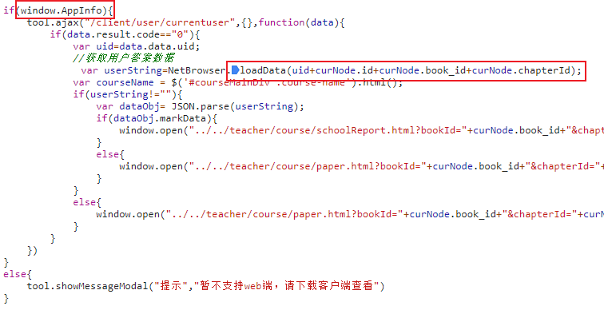
脚本代码如下：
1
2
3
4
5
6
7
8
9
10
11
12
13
14
15
16
17
18
19
20
21
22
23
24
|
(function() {
'use strict';
window.AppInfo = true;
window.NetBrowser = {
'loadData': function() {
let params = new URLSearchParams();
params.append('bookId', currentNode.book_id);
params.append('chapterId', currentNode.chapterId);
params.append('taskId', currentNode.id);
params.append('paperId', currentNode.paperId);
window.open('../../center/teacher/course/paper.html?' + params.toString());
}
};
})();
|
现在在 web 端点击「学习」按钮时，将直接打开练习页面，但由于没有相关 API，所以仍无法正常实现语音录制、提交成绩等功能。
Python｜爬虫部分
爬取的过程自然是从登录开始，首先来到登录页面，登录需要验证码，然而这些数字实在过于规整，让人很难不怀疑它的强度：
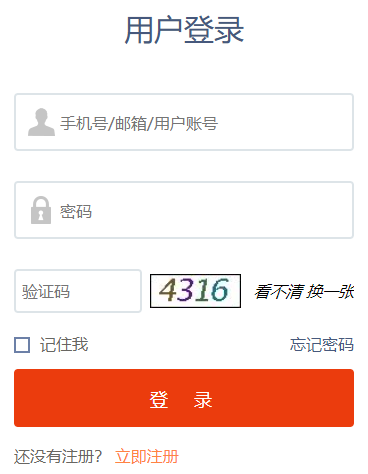
先下载一些验证码样本，叠图之后发现每个字符的位置相对固定，将它们全部按字符拆分之后保存，选择 10 个较完整的数字作为模板：
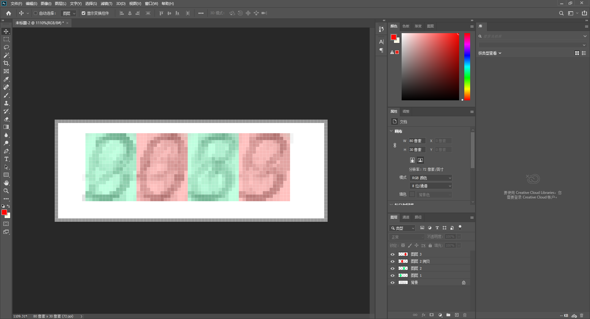
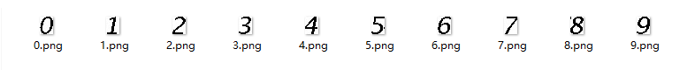
接下来是代码部分，拿到验证码图片，将其二值化后与各个模板图片进行比对，求出截取的图片与模板图的相似度，取最高者即可，下面给出计算两张图片相似度的函数：
1
2
3
4
5
6
7
8
9
10
11
12
13
14
15
16
| from numpy import average, dot, linalg
def sim(im1, im2):
images = [im1, im2]
vectors = []
norms = []
for image in images:
vector = []
for pixel_tuple in image:
vector.append(average(pixel_tuple))
vectors.append(vector)
norms.append(linalg.norm(vector, 2))
a, b = vectors
a_norm, b_norm = norms
res = dot(a/a_norm, b/b_norm)
return res
|
回到浏览器，查看登录的 click 事件，调用了一个 login() 函数，其中对我们的密码做了一些安全处理，具体为 MD5 -> 加盐 -> MD5：
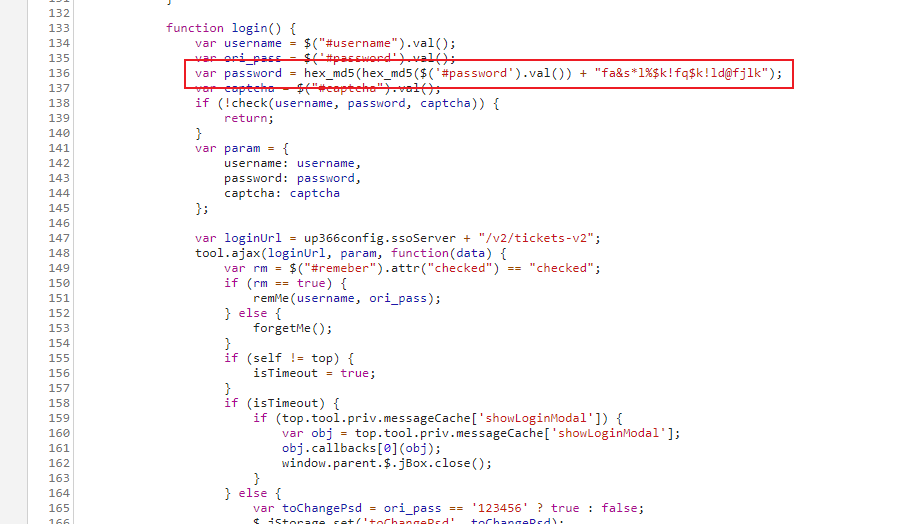
成功模拟登录之后就是复刻我们上面寻找答案的过程了，详见项目 spider.py
光是获得答案可还不行，想要实现自动化，还需要对获得的数据进行解析，回到上面的 chapters 请求，仔细观察后不难发现其中的各个章节存在着某种树形结构：
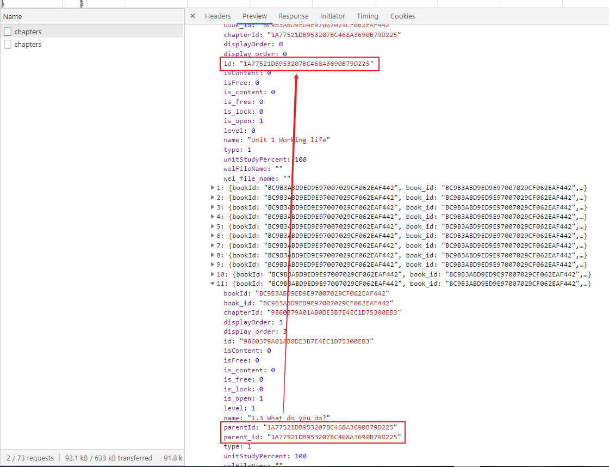
任务之间通过 parent_id 相关联，最终形成了与目录相同的层次结构，discussions 中常提到的「父节点不存在」正是因为某些书籍不具备这样的目录结构，从而导致后续解析出现问题。临时的解决方法是将所有任务都扁平化到根节点上，但这同时也丧失了刷课过程中按章节顺序显示进度的能力
针对不同的 question_type 设计解析器，可以实现一个自动爬取答案并生成 Markdown 文件的小程序，但我们这里主要关注自动化，因此不再深入展开
Python｜自动化部分
注入尝试
一个偶然的机会，在启动 iSmart 客户端时加上了 chromium 的 --remote-debugging-port=9222 参数，惊奇地发现 chrome://inspect 中出现了对应的调试选项，尝试访问 http://127.0.0.1:9222/json/version，得知对应协议版本为 1.1，支持的功能较少，不过简单封装一下，也足够实现自动化所使用了。
启动抓包工具，任意提交一项作业，一个指向 /client/task/score/submit 的请求吸引了我的注意，查看请求数据：
/client/task/score/submit1
2
3
4
5
6
7
8
9
10
11
12
13
14
15
16
17
18
19
20
| {
"ut": "3ad2a7b7ce38f4ee0a3be444907f066ed7c69aedbac495a1bef7d5da724c6177",
"tasksJson": [
{
"uid": "1380007",
"taskNo": "0",
"taskId": "F29B3120DCF689BB2272D29C34713CBD",
"studyDate": "1628685008641",
"deviceType": 5,
"percent": "0",
"batchTag": "9FF29A1D768A4441BDD7C1353A9A54C2",
"seconds": "2",
"chapterId": "F29B3120DCF689BB2272D29C34713CBD",
"result": "%7B%22studentid%22:138***7,%22testInfo%22:%7B%22answerdata%22:%22%22,%22markdatao%22:%22%3Celement%20id=%5C%22706a439768bfb6762c0991be2968608e%5C%22%3E%3Cmark_data%3E%3Cscore%3E0%3C/score%3E%3Cresult%3E2%3C/result%3E%3C/mark_data%3E%3C/element%3E%3Celement%20id=%5C%22455bb26ea26c0577aee8fff2ad607b6b%5C%22%3E%3Cmark_data%3E%3Cscore%3E0%3C/score%3E%3Cresult%3E2%3C/result%3E%3C/mark_data%3E%3C/element%3E%3Celement%20id=%5C%22cf365b0c48c467829360fbf7403fb88c%5C%22%3E%3Cmark_data%3E%3Cscore%3E0%3C/score%3E%3Cresult%3E2%3C/result%3E%3C/mark_data%3E%3C/element%3E%3Celement%20id=%5C%227808f2a05bd125ca61497d416583839d%5C%22%3E%3Cmark_data%3E%3Cscore%3E0%3C/score%3E%3Cresult%3E2%3C/result%3E%3C/mark_data%3E%3C/element%3E%3Celement%20id=%5C%22af0de2e5c52aa821aa14a858b49987fe%5C%22%3E%3Cmark_data%3E%3Cscore%3E0%3C/score%3E%3Cresult%3E2%3C/result%3E%3C/mark_data%3E%3C/element%3E%3Celement%20id=%5C%22c0ced4e3e7545626746f46776970b14b%5C%22%3E%3Cmark_data%3E%3Cscore%3E0%3C/score%3E%3Cresult%3E2%3C/result%3E%3C/mark_data%3E%3C/element%3E%3Celement%20id=%5C%228b200b5f9edecc6b6e7ace0341925806%5C%22%3E%3Cmark_data%3E%3Cscore%3E0%3C/score%3E%3Cresult%3E2%3C/result%3E%3C/mark_data%3E%3C/element%3E%3Celement%20id=%5C%22684ab0061566247cbc49bd4015cca3ac%5C%22%3E%3Cmark_data%3E%3Cscore%3E0%3C/score%3E%3Cresult%3E2%3C/result%3E%3C/mark_data%3E%3C/element%3E%22%7D%7D",
"id": "14",
"score": "0",
"bookId": "7B6911511DB6B33638F6C58531D8FBD3"
}
]
}
|
注意被高亮的行，将其 URL 解码后可以再次展开如下：
"result":1
2
3
4
5
6
7
| {
"studentid": 1380007,
"testInfo": {
"answerdata": "",
"markdatao": "<element id=\"706a439768bfb6762c0991be2968608e\"><mark_data><score>0</score><result>2</result></mark_data></element><element id=\"455bb26ea26c0577aee8fff2ad607b6b\"><mark_data><score>0</score><result>2</result></mark_data></element><element id=\"cf365b0c48c467829360fbf7403fb88c\"><mark_data><score>0</score><result>2</result></mark_data></element><element id=\"7808f2a05bd125ca61497d416583839d\"><mark_data><score>0</score><result>2</result></mark_data></element><element id=\"af0de2e5c52aa821aa14a858b49987fe\"><mark_data><score>0</score><result>2</result></mark_data></element><element id=\"c0ced4e3e7545626746f46776970b14b\"><mark_data><score>0</score><result>2</result></mark_data></element><element id=\"8b200b5f9edecc6b6e7ace0341925806\"><mark_data><score>0</score><result>2</result></mark_data></element><element id=\"684ab0061566247cbc49bd4015cca3ac\"><mark_data><score>0</score><result>2</result></mark_data></element>"
}
}
|
其中 markdatao 又为一段 xml 字符串，继续展开如下（补上了表头和 root 标签）：
1
2
3
4
5
6
7
8
9
10
11
12
13
14
15
16
17
18
19
20
21
22
23
24
25
26
27
28
29
30
31
32
33
34
35
36
37
38
39
40
41
42
43
44
45
46
47
48
49
50
51
| <?xml version="1.0" ?>
<root>
<element id="706a439768bfb6762c0991be2968608e">
<mark_data>
<score>0</score>
<result>2</result>
</mark_data>
</element>
<element id="455bb26ea26c0577aee8fff2ad607b6b">
<mark_data>
<score>0</score>
<result>2</result>
</mark_data>
</element>
<element id="cf365b0c48c467829360fbf7403fb88c">
<mark_data>
<score>0</score>
<result>2</result>
</mark_data>
</element>
<element id="7808f2a05bd125ca61497d416583839d">
<mark_data>
<score>0</score>
<result>2</result>
</mark_data>
</element>
<element id="af0de2e5c52aa821aa14a858b49987fe">
<mark_data>
<score>0</score>
<result>2</result>
</mark_data>
</element>
<element id="c0ced4e3e7545626746f46776970b14b">
<mark_data>
<score>0</score>
<result>2</result>
</mark_data>
</element>
<element id="8b200b5f9edecc6b6e7ace0341925806">
<mark_data>
<score>0</score>
<result>2</result>
</mark_data>
</element>
<element id="684ab0061566247cbc49bd4015cca3ac">
<mark_data>
<score>0</score>
<result>2</result>
</mark_data>
</element>
</root>
|
疑似发送了一些作答信息，但由于顶层 json 中的 ut 值无法确定来源（猜测为某种校验码），且在已加载的 js 文件中无法找到其来源，直接发送「提交试卷」请求的想法暂时作罢。
既然无法定位 ut 的来源，那么我们只能另寻出路。还记得刚刚的 NetBrowser 变量吗？在客户端这里，它的值可不是 undefined，通过 Object.keys(NetBrowser) 查看其属性列表，其中有不少的 native function，那么真正的「提交试卷」请求很可能就是通过它发出来的：
查看 NetBrowser 中的 key：1
2
3
4
5
6
7
8
9
10
11
12
13
14
15
16
17
18
19
20
21
22
23
24
| [
'doDownloadBook', 'CloseWindow', 'cancelVideoConvert', 'goBack', 'goRefresh',
'play', 'loadMediaSource', 'pausePlay', 'resumePlay', 'stopPlay', 'seekPlay',
'getCurrentTime', 'getDuration', 'startRecordV2', 'startRecord', 'endRecord',
'endRecordV2', 'playRecord', 'pausePlayRecord', 'stopPlayRecord', 'resumePlayRecord',
'playAudio', 'getAudioCurrentTime', 'seekPlayAudio', 'pausePlayAudio',
'resumePlayAudio', 'stopPlayAudio', 'getVideoCurrentTime', 'getVideoDuration',
'pausePlayVideo', 'resumePlayVideo', 'seekVedio', 'stopPlayVideo', 'activeVideo',
'isShowVideo', 'initVedioView', 'setPosterPath', 'SetVideoPosition', 'setVideoMute',
'setVideoPlayImage', 'getVideoImage', 'setVideoSubtitles', 'activeVideoControl',
'startPlayVideo', 'setVideoControlAutoHide', 'setVideoControlVisible',
'setFullScreen', 'setAudioStateChangeJSCallback', 'setVideoStateChangeJSCallback',
'setPlayRecordStateChangeJSCallback', 'setPageExchangeJSCallback', 'setRecordEndJSCallback',
'setRecordScoringJSCallback', 'setRecordStartJSCallback', 'initPageInfo', 'goToMain',
'backMain', 'setSlidePostion', 'gotoURL', 'DownloadResoucesV2', 'DownloadResouces',
'DownloadBook', 'ReDownloadBook', 'UploadRecordFiles', 'SaveRecordFiles',
'loadData', 'saveData', 'clearData', 'loadData4Books', 'saveData4Books',
'clearData4Books', 'TaskStudy', 'refreshTrainingCatalog', 'getCourseVideoList',
'deleteCourseVideo', 'startCourseRecord', 'uploadCourseVideo', 'playCourseVideo',
'openCourseVideoDir', 'getFlipbookOfChapters', 'submitTask', 'getClientInfo',
'loadPaperInfos', 'gotoDeviceTest', 'IsValidMP4', 'CodecToH264', 'CanClose',
'openAttachment', 'exportPaper', 'stopExportPaper', 'cancelExportPaper', 'openExplorer',
'showBindMobile', 'bindMobileFinish', 'getMenuFuncIdList', 'getAccreditList'
]
|
乍一看还挺复杂，东西也不少，其实仔细看看不难发现大部分都是与视频和录音相关的，与课程提交相关的就只有 saveData、saveData4Books、TaskStudy、submitTask 这几个，其中与「提交」意思最接近的无非就是 submitTask 了，所以接下来我们对其做 Hook
这里选择 jQuery 来动手脚，这样我们注入的内容就能被几乎所有页面加载到，为 jQuery 脚本文件配置一个本地覆盖，然后在末尾添加如下内容：
jquery.min.js1
2
3
4
5
6
7
8
9
10
11
12
13
14
15
16
17
18
19
20
21
22
23
| (function () {
window.copy = function (text) {
let dom = document.createElement('textarea')
document.body.appendChild(dom)
dom.innerHTML = text
dom.select()
document.execCommand('copy')
document.body.removeChild(dom)
}
NetBrowser.submitTask = new Proxy(
NetBrowser.submitTask, {
apply(target, context, args) {
window.copy(JSON.stringify(args));
setTimeout(() => {
$.jBox('<div style="font-size: 15px;">Arguments copied to clipboard.</div>', {'title': 'Injected!'})
}, 1000)
return Reflect.apply(target, context, args)
}
}
)
})()
|
当 submitTask 被调用时，这段脚本能将传入的参数以 json 形式 dump 出来，并复制到剪贴板，同时在页面上显示一段消息提示：“Arguments copied to clipboard.”。
提交成绩
接下来在所有文件中搜索该函数的调用，非常幸运地在 xot.js 中发现了如下代码片段：
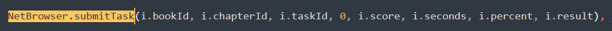
无需过多的逆向和猜测，根据代码中的词汇意思便已经能够得知各个参数的含义！现在随便进入一个没有任何题目的任务，然后点击提交，等待数据上传成功后，查看请求中 result 部分：
https://school.ismartlearning.cn/client/task/score/submit1
2
3
4
5
6
7
| {
"studentid": 1380007,
"testInfo": {
"answerdata": "",
"markdatao": ""
}
}
|
这里应该就是 result 的最简形式了，接下来只需操作 DevTools API 调用 NetBrowser.submitTask 即可，下面是最终的效果：

由于每次提交的分数是 Number 类型，所以实际上可能可以超过 100 分的上限（？），不过这样属实是太离谱了，下一步需要根据题目类型和题量为每个任务随机选择合适的时长和分数，该部分技术难度不高，这里便不再赘述，详情可以去看看 GitHub 上的代码实现
最后再啰嗦一句，用此法提交的成绩由于 result 数据不全，尚有被检测的可能，如果想要达到完全无感提交，需要进一步分析 answerdata 和 markdatao 两个属性，这里就暂时咕咕咕了（欢迎 PR）。刷课有风险，入坑需谨慎！